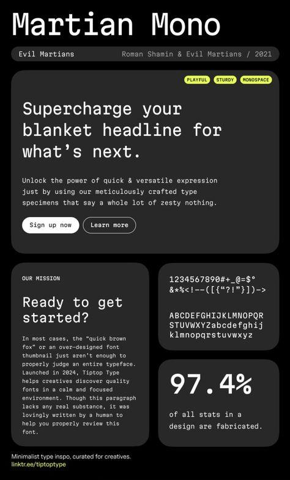

VHS menu
19335916
popup: feature toggles
replaces: iOS green switches in rounded grouped cards |  | - PASS must: each toggle's state is shown as a word (on / off), not as a switch, slider or pill control
All four toggle rows end in '[on] / off' text (posts-off screens show 'on / [off]'); no switch anywhere, unlike today's green iOS switches. - PASS must: the state words line up in one column on the right, like the values of a menu
The '[on] / off' values are right-aligned in one column at the popup's right edge, like the VHS menu's ON/OFF column. - PASS must: the current (hovered or focused) row is marked by one solid colour band across the whole row
Hover (row 2) and keyboard focus (row 1) both show a solid ink band edge to edge with reversed light text, like the VHS red bar. Only light mode is shown for these states. - PASS must: the toggles read as a plain list of text rows, not rows inside a rounded card
Toggles are bare text rows on the page background with no card, border or dividers. - PASS must_not: a switch or pill-shaped control on any toggle row
No switch or pill on any toggle row in any screenshot. - PASS must_not: system green or blue
No green or blue anywhere; today's blue 'report: not handled right' link is now plain grey text.
|
B/W pill controls
11379889
popup: site choice (refuse / accept / leave)
replaces: iOS segmented control (grey track, white raised thumb) |  | - PASS must: refuse / accept / leave is one outlined pill with the chosen side filled in ink and its text reversed
One thin-outlined pill holds refuse / accept / leave; 'refuse' is a filled ink capsule with white text in light mode, and inverted (light fill, dark text) in dark mode. - PASS must: the unchosen sides are plain text on the background
'accept' and 'leave' are plain grey text on the page background inside the outline, with no track fill. - PASS must_not: a grey track with a white raised thumb
No grey track or shadowed thumb. In dark mode the chosen fill is near-white, but it sits flat on the dark background inside an outline, with no grey track. - PASS must_not: system blue
No blue in the control or anywhere else.
|
Struck-through done items
20770715
popup: this-page status
replaces: dot + plain sentence ('cookies refused') |  | - PASS must: when a banner was handled, the main status line names the handled thing struck through, at full text size
'cookie banner' in bold, struck through, as the status headline, with a smaller 'refused · onetrust' below. Today's 'dot + no known cookie banner found' sentence is gone. - PASS must: the handled row is set apart as a filled row (a colour field), the way done items are in the reference
The status block is a full-width flat field: pale rose in light mode, deep maroon in dark. It reads as the reference's filled done row. - PASS must_not: the strike only on a small grey prefix while the line is carried by an unstruck word
The struck word is the headline itself; nothing unstruck carries the line.
|
iA Writer Focus Mode
2092684
popup: attention
replaces: every row at the same weight; green, amber, red dots and filled pills all at full strength |  | - PARTIAL must: one thing is at full contrast (this page's status); the rest of the popup is visibly quieter
The status headline is the darkest text, and 'off', 'this page' and section labels are dimmed. But the toggle labels, '[on]', 'report' and 'settings' are only slightly lighter mid-grey, and the ink-filled 'refuse' segment is as strong as the status. In dark mode the white 'refuse' fill is the brightest thing on screen, brighter than the status field. - PARTIAL must_not: several accents competing at full strength (coloured dots, filled pills, ink buttons)
The coloured dots and green switches are gone, but two full-strength accents remain: the rose/maroon status field and the solid ink (dark mode: white) 'refuse' pill, plus the ink hover band when hovering.
|
Martian Mono
31399571
all: type
replaces: ui-monospace (differs per OS) |  | - PASS must: text is set in Martian Mono
The popup glyphs are Martian Mono's (wide squarish 'a', 'e', flat-topped 'f', square brackets), clearly different from today's SF Mono. Only the popup is in the screenshots; settings and welcome aren't shown. - PASS must: Martian Mono at its natural width; the layout makes room for it
Text is at the face's normal width, and the longest row ('answer cookie banners [on] / off') fits on one line with room to spare, without truncation. - PASS must_not: the typeface condensed (font-stretch below 100%) to fit today's rows
Letterforms look at their normal width with no squeezed look (CSS confirms font-stretch: 100%).
|